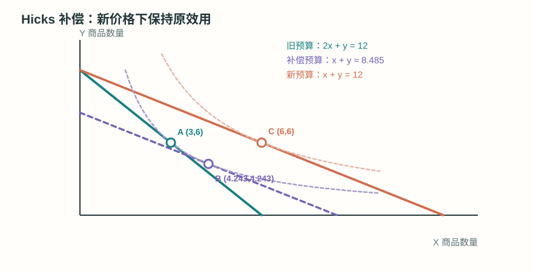
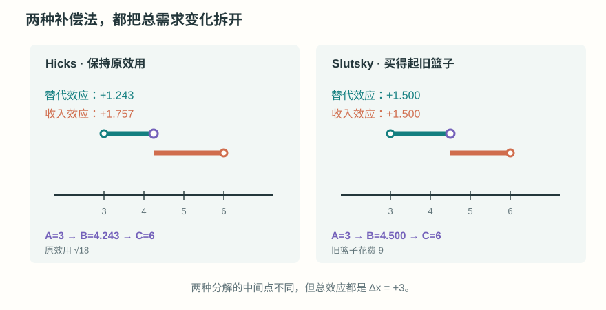

CHAPTER 10 · MICROECONOMICS
收入效应与替代效应
一次价格下降，两条原因路径：用同一组数据区分希克斯与斯勒茨基分解。
一件商品降价，究竟改变了什么？
上一章用预算2x+y=12、偏好 U(x,y)=√(xy) 发现最优 A=(3,6)。如果 X 的价格由2元降为1元，Y价格仍为1元，预算12元不变，新预算是 x+y=12，新最优 C=(6,6)。X数量从3增至6。这个变化的原因至少有两部分：X相对于Y变便宜了，消费者愿意替代；同时预算能买到更多商品，实际购买力提高了。
不能把X增加3单位全部说成替代效应，也不能把名义收入12元不变误认作收入效应不存在。分解的意义，是引入一个假想中间消费束，把两股力量分别测算。
下面将严格区分希克斯（Hicks）与斯勒茨基（Slutsky）两种补偿口径：它们的起点与终点相同，但“保持什么不变”不同，因而中间点和效应数值不必相同。
希克斯补偿：保持原来的效用水平
希克斯补偿问的是：如果价格按新价格计算，但用一笔虚拟收入调整，使消费者仍恰好达到旧效用 U₀=√18，那么他会选择什么？新价格 Px=1、Py=1，保持旧效用的条件是 xy=18。最小化 x+y 时，由对称性和一阶条件得到中间束 BH=(√18,√18)≈(4.243,4.243)。
此消费束在新价格下的最低支出为2√18≈8.485元；相比消费者实际拥有的12元，需要从新价格下的购买力中虚拟拿走约3.515元，才能把效用固定在旧水平。这不是实际征税，只是为了隔离相对价格效应所作的思想实验。

| 状态 | X数量 | Y数量 | 效用水平 |
|---|---|---|---|
| A：原最优 | 3 | 6 | √18≈4.243 |
| B：希克斯补偿 | √18≈4.243 | √18≈4.243 | √18≈4.243 |
| C：新最优 | 6 | 6 | 6 |
沿 A→B→C 分开读出替代与收入效应
从 A 到 BH，只改变相对价格并用虚拟收入保持旧效用，X消费增加 √18−3≈1.243 单位：这是希克斯替代效应。从 BH 到 C，价格保持新水平，补偿收入恢复为12元，X再增加6−√18≈1.757单位：这是希克斯收入效应。两者相加仍是总增量3。
从图中还可以看出另一件容易遗漏的事：虽然商品 X 价格下降，商品 Y 的最终购买量仍为6；但中间的希克斯替代效应使 Y从6降为约4.243，随后收入效应又把它推回6。这证明单看两个端点的 Y“没有变化”，不能说两种效应都为零。
斯勒茨基补偿：保证原消费篮子仍买得起
另一种补偿标准不是固定效用，而是让消费者在新价格下恰好买得起旧篮子A=(3,6)。新价格下这个篮子的成本是 1×3+1×6=9元。给定新的价格和虚拟预算9元，U=√xy 的最优消费为 BS=(4.5,4.5)，效用4.5，略高于旧效用√18。
此时 X 的斯勒茨基替代效应为4.5−3=1.5；收入效应为6−4.5=1.5。与希克斯分解数值不同，但总效应仍然是3。

| 方法 | 中间X | X替代效应 | X收入效应 | 总效应 |
|---|---|---|---|---|
| 希克斯 | 4.243 | ≈+1.243 | ≈+1.757 | +3 |
| 斯勒茨基 | 4.5 | +1.5 | +1.5 | +3 |
价格改变无限小时，两种补偿替代效应在局部一阶意义下趋于一致；在幅度较大的离散价格变化里，中间点一般不同。必须明确使用哪一种定义，不能把两种图随意混用。
斯勒茨基方程与吉芬商品的条件
把价格变化缩小到微分尺度，消费者需求 x(p,I) 的自身价格导数可以拆成补偿需求 h(p,u) 的价格导数，加上实际收入随价格变化产生的额外响应。在通常符号约定下：
对 U=√xy、旧价格 Px=2、Py=1、收入I=12，可得 x=I/(2Px)=3，马歇尔需求自身价格导数 −I/(2Px²)=−1.5；希克斯补偿导数 −0.75；收入导数 1/(2Px)=0.25。于是 −1.5=−0.75−3×0.25，正好验证方程。
当价格上涨时，补偿替代效应会使本商品需求不增（在常规凸偏好下通常减少）。正常品的收入效应与这一方向一致；劣等品的收入效应可能反向。如果劣等品的收入效应足够强，使总需求反而随自身价格上涨而增加，就出现吉芬行为。这需要强烈的收入效应，普通低价商品或价格上涨时的抢购都不能据此直接认定为吉芬商品。
交互拆分：Hicks 还是 Slutsky？
双重补偿实验
固定初始A=(3,6)、旧Px=2、Py=1、I=12；改变X的新价格并选择补偿方式。最终C是同一消费束，中间B则依定义改变。
希克斯补偿：A_x=3，B_x≈4.243，C_x=6；替代+1.243，收入+1.757。
每次重新计算解析最优解，不使用随机值；默认状态对应正文的价格下降 2→1。
希克斯和斯勒茨基补偿后，哪个虚拟预算更大？为什么新价格下降时两者一般不相等？
查看答案
新价格Px=1时，旧篮子成本为9（Slutsky），维持旧效用的最低成本约8.485（Hicks），因此Slutsky预算更大。因为在新相对价格下，重新优化能用比直接购买旧篮子更低的支出维持原效用。
此后学习生产函数、成本与市场结构时，也应保持这样的习惯：把假设、可行集合、最优条件和实际结果区分开。
引用文献、定义与适用范围
本章的几何、消费束与数值由假设 U=√xy、给定价格与收入推导。关于吉芬现象的研究属于独立实证文献，不能用本章的正常品模型直接复现。参考：